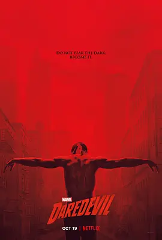

9.2
夜魔侠 第三季
Daredevil Season 3
2018
美国
评分 9.2
导演:
菲尔·亚伯拉罕 / 史蒂芬·瑟吉克 / 马克·约布斯特 / 亚历克斯·加西亚·洛佩斯
演员:
查理·考克斯 / 黛博拉·安·霍尔 / 埃尔登·亨森 / 文森特·多诺费奥 / 威尔逊·贝索尔
类型:
剧情,动作,犯罪
剧情简介
大楼坍塌后的漫长黑暗中，马特·默多克被迫重新审视自己。他在破败教堂里挣扎求生，身体虚弱、信念摇晃，不再确定“夜魔侠”这一身份是否值得继续背负。外界的秩序却在此时悄然变化——威尔森·菲斯克被成功操纵法律程序，从监狱中获得“保护性释放”。他以温和、悔悟的姿态重新现身，却在暗处编织更严密的控制网络，把整个城市推向无声的恐惧。马特在重伤未愈的状态下潜回街头，他的行动比以往更加孤独，也更加激烈。他拒绝朋友的帮助，拒绝法律途径，执意以自己的方式对抗菲斯克。与此同时，一个拥有精湛技术、外貌与夜魔侠极为相似的神秘刺客出现，他以精准的致命攻击摧毁马特的名声，将城市再次推入混乱。福吉与卡伦为了真相奔走调查，却逐渐被卷入对手的布局，危险一步步逼近。本季的冲突锋利而紧绷，正义与复仇的界线几乎被磨碎。马特在信仰的低谷中摸索，在血战与心理折磨中重新定义自己的使命；菲斯克以深沉的操控展现出前所未有的威胁，让人难以分辨他究竟是在统治城市，还是在摧毁它。地狱厨房再次站在崩溃边缘，而最终能阻止黑暗蔓延的，也只有那个在阴影中跌倒、再站起来的孤独身影。